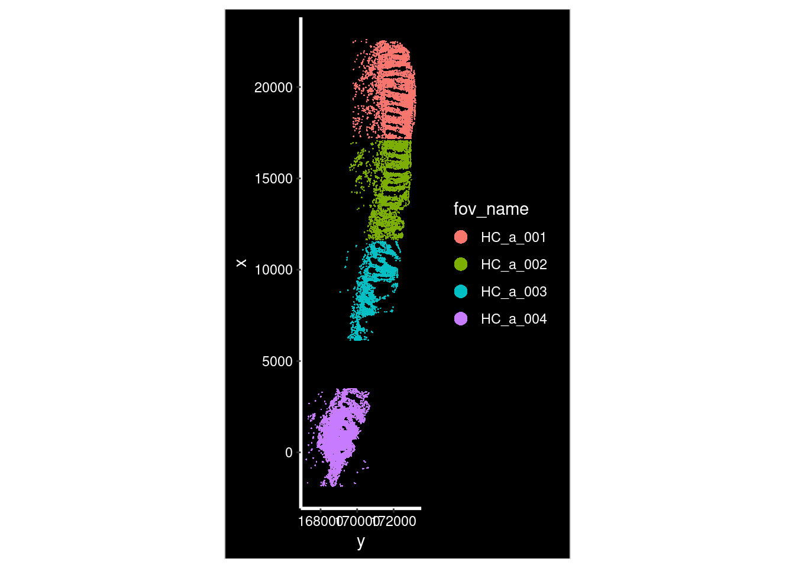
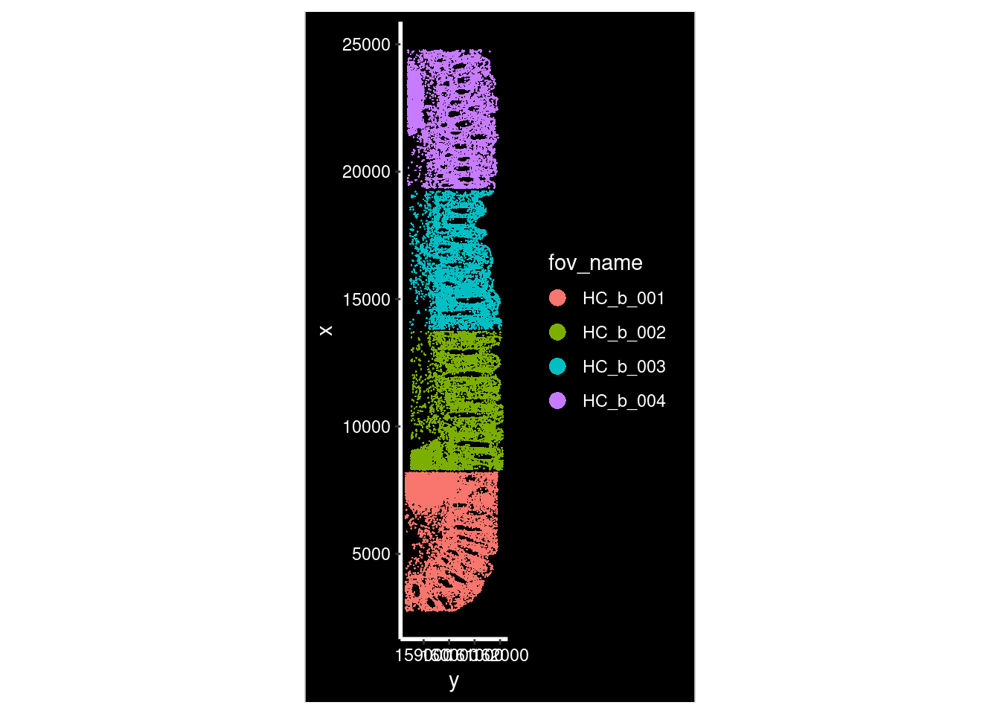
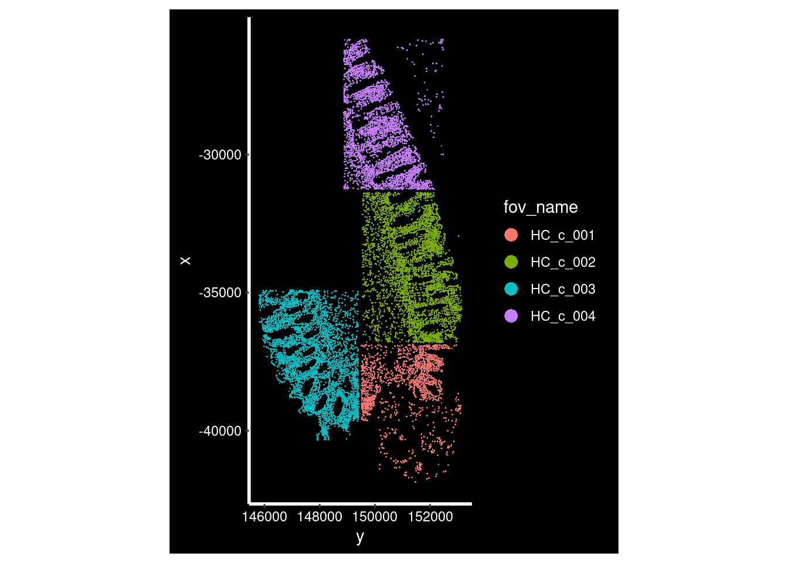
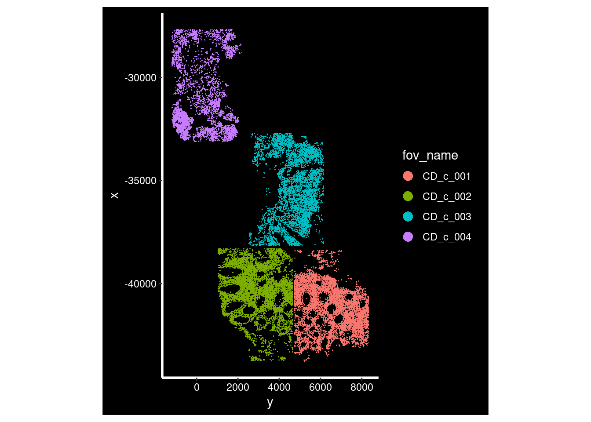
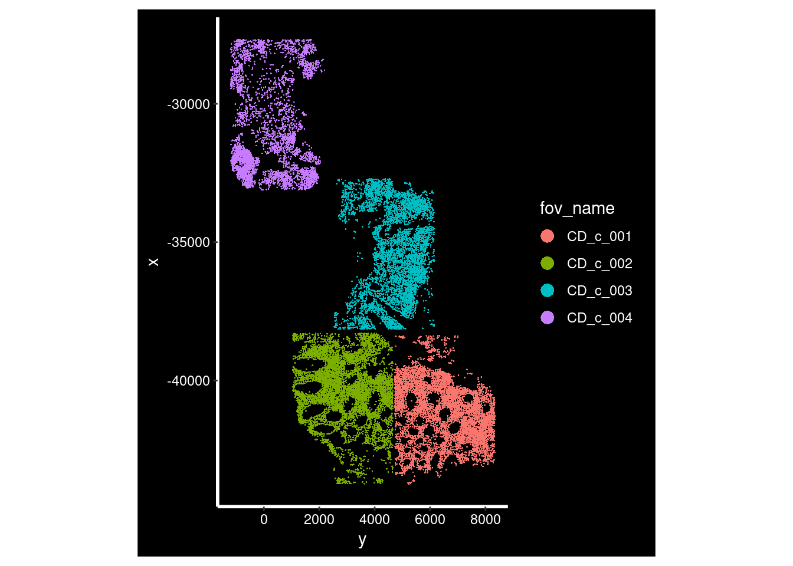

6 Understanding our spatial data
6.2 Overview
Conducting processing and data analysis steps with open source, third-party software/packages provides flexibility and supports a range of different analyses. However, there are key steps undertaken before you can load your data into R/Python.
6.3 The raw data
The files generated by high-resolution spatial transcriptomics platforms, such as the CosMx Spatial Molecular Imager (SMI), are typically categorised based on their processing stage. The Raw Files contain the primary output from the instrument’s run, necessary for decoding and spatial assignment, while the Flat Files represent the aggregated, cell-level data ready for statistical analysis in R or other environments.
6.3.1 Raw files
The raw files represent the initial, large-volume data output directly from the imaging instrument after the spatial transcriptomics experiment is complete. This directory contains all the key imaging and log information required to computationally process the raw fluorescent signals into quantifiable transcript locations and cellular boundaries.
Key raw folders and files contain essential data used for segmentation and
cell coordinate mapping. For example, the CellStatsDir/Morphology2D folder
holds the images, including those generated from immunofluorescence staining
(e.g., DAPI, PanCK, CD45), which are vital inputs for cell segmentation, as the
raw gene expression measurements are initially at the transcript level, not the
cell level.
Additionally, the RunSummary/ directory contains the instrument configuration
files necessary for accurately converting image pixels into physical slide X-Y
coordinates.
| Folder / File Name | Description |
|---|---|
Flowcell_Folder/ |
Root directory containing logs and slide/run data |
Logs/ |
FOV coordinate files |
GSM7473682_HC_a_S1/ |
Main data directory for slide GSM7473682_HC_a, slot 1 |
plex_001.csv |
Target probes metadata |
CellStatsDir/ |
Segmentation outputs (labels, overlays, morphology images) |
CellStatsDir/ |
Location of high-resolution images |
RunSummary/ |
Instrument configuration files (e.g. pixel–nm ratio) |
AnalysisResults/ |
Processed analysis outputs (FOV summaries, detection limits, coordinates) |
Data retrieved from CosMxDACustomModules.
6.3.2 Flat files
You do not need to access every one of these files!
Most of what we need to do processing. Typically a directory of flat files is read in as a whole, and we don’t need to worry too much. But note there are no images in here.
The flat files contain the organised, post-processing outputs from a pipeline
(like AtoMx SIP) that are directly ready for loading into R packages such as
Seurat.
These files come after cell segmentation, where the single-molecule data are
summarised into count matrices at the single-cell level. The main file,
SLIDE_exprMat_file.csv.gz, contains the counts of genes per cell.
A note on cell segmentation
Cell segmentation is the computational step in imaging-based ST that identifies the boundaries of individual cells so that RNA molecules can be correctly assigned to each one.
It uses nuclear (DAPI) and/or membrane stains to group transcript locations into a cell-by-gene count matrix and cell border shapes (polygons) for downstream analysis.
Accurate segmentation is essential because it determines how reliably transcripts are assigned to individual cells, which directly affects downstream analyses. Commercial platforms like CosMx and Xenium include segmentation in their processing pipelines.
However, you may choose to re-run segmentation using independent tools such as Cellpose (image-based) or Baysor (transcript-based or hybrid) to improve boundary accuracy and adapt to specific tissue types.
Additionally, key metadata files are read in alongside the gene counts which
inform the spatial coordinates of FoVs (SLIDE_fov_positions_file.csv.gz),
transcripts (SLIDE_tx_file.csv.gz), and segmented cell boundaries
(SLIDE-polygons.csv.gz).
| File name | Description |
|---|---|
SLIDE-polygons.csv.gz |
Cell borders |
SLIDE_exprMat_file.csv.gz |
Counts of genes per cell (counts matrix) |
SLIDE_fov_positions_file.csv.gz |
Location of FOVs on slide |
SLIDE_metadata_file.csv.gz |
Cell-level QC metadata |
SLIDE_tx_file.csv.gz |
Location of individual transcripts |
Xenium data
For a Xenium slide there is just the one typical output directory; they discuss the formats in the section on data archiving, but again, software tools take the directory as a whole.
6.4 Importing the flat files into R
A note on Seurat::LoadNanostring()
To load the flat files into R, we can use the Seurat::LoadNanostring() function.
However, this default method drops most of the metadata in the Seurat object.
For example, what field of view (FoV) each cell a member of is missing.
We provide an alternate function. In time, this should be fixed within Seurat. See comments here. This is an example code snippet using the replacement function:
# Import the custom LoadNanostring() function
source(here("scripts/LoadNanostring_edited_function.R"))
# Define the path to the flat files. Note that the input is the whole directory.
# The function deals with reading and assigning the metadata correctly to the
# cells and gene counts
example_path <- here("raw_data", "GSM7473682_HC_a/")
example_so <- LoadNanostring(example_path, assay='RNA', fov="GSM7473682.HC.a")6.5 Loading the subsampled workshop data
We use a subsampled data for this workshop, for three healthy control samples (HC) and three Crohn’s disease samples (CD).
The first four field of views for each sample are used.
# Code to subset the data
seurat_file_00_raw <- here("data", "GSE234713_CosMx_IBD_seurat_00_raw.RDS")
so_raw_full <- readRDS(seurat_file_00_raw)
so_raw_subset <- so_raw_full[, so_raw_full$group %in% c("CD", "HC") & so_raw_full@meta.data$fov <= 4]
saveRDS(so_raw_subset, here("data", "GSE234713_CosMx_IBD_seurat_00_raw_subsampled.RDS"))
# Load the prepared data
so_path <- here("data", "GSE234713_CosMx_IBD_seurat_00_raw_subsampled.RDS")
so <- readRDS(so_path)Analysing large data sets with Sketch-based integration
When analysing your own data, it is often necessary to work with the entire data set rather than an arbitrary subsample, as simple subsampling can omit important biological information or spatial regions. However, processing very large data sets can be computationally demanding.
Sketch-based analysis offers a practical solution by selecting a representative subset of cells that preserves the overall structure and diversity of the full data set. Instead of arbitrarily subsetting by fields of view (FoVs), this approach uses geometric sketching to capture both common and rare cell populations. You can perform initial preprocessing steps on this smaller subset and then extend the results back to the complete dataset for downstream analyses.
For more details, see Seurat’s sketch-based analysis vignette2\(^,\)3 and the GeoSketch method description4 for a Python alternative.
6.6 Visualising our spatial data
TODO: add note on plotting H&E image - unavailable with this data.
- Need to import into stutility, which is not compatible with v5 Seurat
- https://satijalab.org/seurat/articles/spatial_vignette
for (i in hc_idents) {
p <- ImageDimPlot(so, fov = i, group.by = "fov_name", axes = T)
print(p)
}
for (i in cd_idents) {
p <- ImageDimPlot(so, fov = i, group.by = "fov_name", axes = T)
print(p)
}
 

Xenium does not have FOVs
Xenium uses a wide-field fluorescence microscope for automated image acquisition across a larger, continuous imaging area. This approach allows Xenium to map gene expression over the entire tissue region selected by the user, rather than stitching together multiple small, distinct FOV images.
6.6.1 Understanding the SeuratObject
Why Seurat?
Seurat objects are a data structure to store the count data and additional metadata. As the data is very high dimensional, it is important that connected information about cells, samples, and data stay connected during data analysis.
Other frameworks such as scverse, and data classes like anndata and
SpatialFeatureExperiment represent the data differently, but all meet the
needs above. Differences in compatibility with other tools.
Flexibility across single-cell transcriptomics.
Display the Seurat object.
so## An object of class Seurat
## 999 features across 68624 samples within 2 assays
## Active assay: RNA (980 features, 0 variable features)
## 6 layers present: counts.GSM7473682.HC.a, counts.GSM7473683.HC.b, counts.GSM7473684.HC.c, counts.GSM7473688.CD.a, counts.GSM7473689.CD.b, counts.GSM7473690.CD.c
## 1 other assay present: negprobes
## 6 spatial fields of view present: GSM7473682.HC.a GSM7473683.HC.b GSM7473684.HC.c GSM7473688.CD.a GSM7473689.CD.b GSM7473690.CD.c999 features across 68624 samples with 2 assays
- 980 genes + 19 negprobes
- 68.6k number of segmented cells analysed
- Two different types of measurements, detailed below
Active assay: RNA (980 features, 0 variable features):
- RNA assay: Primary gene expression measurement data (counts)
- 980 transcripts measured
- No variable features as feature selection has not been conducted yet
6 layers present: counts.GSM7473682.HC.a, counts.GSM7473683.HC.b, counts.GSM7473684.HC.c, counts.GSM7473688.CD.a, counts.GSM7473689.CD.b, counts.GSM7473690.CD.c
- Each layer represents a sample from either HC or CD donors. Required for comparison of both groups downstream
1 other assay present: negprobes
This secondary assay specifically stores the counts corresponding to negative control probes. In spatial transcriptomics, tracking these control probes is crucial for quality control, specificity assessment, and defining background signal.
6 spatial fields of view present: GSM7473682.HC.a GSM7473683.HC.b GSM7473684.HC.c GSM7473688.CD.a GSM7473689.CD.b GSM7473690.CD.c:
The list of six spatial fields of view (FOVs) explicitly links the spatial/image information stored in the Seurat object to the six specific samples/layers identified above. This demonstrates that the data set is ready for spatially resolved analysis and visualisation, allowing results (like cell clusters or gene expression) to be mapped back onto the original tissue sections for all six integrated samples.
CosMx FOVs and sample names
Note that the field of view names are delimited by .. At the time of writing,
underscores will cause some functions to fail silently. For more information,
see this issue
6.6.2 Exploring the metadata
Along with the transcript counts per-cell, metadata tracks other central information such as its experimental details. This is important so we know which groups to compare downstream (HC vs. UC). This study has one sample per slide, but there are typically more. Examples of metadata include:
- The spatial coordinates of your cells and genes
- Segmented cell boundaries
- Which tissue sample and FOV data belongs to
head(so@meta.data)## orig.ident nCount_RNA nFeature_RNA fov cell_ID Area AspectRatio
## HC_a_1_1 GSM7473682.HC.a 366 187 1 1 6153 0.67
## HC_a_2_1 GSM7473682.HC.a 805 283 1 2 16178 0.85
## HC_a_3_1 GSM7473682.HC.a 118 73 1 3 3119 1.52
## HC_a_4_1 GSM7473682.HC.a 106 59 1 4 3988 1.52
## HC_a_5_1 GSM7473682.HC.a 462 207 1 5 4773 0.53
## HC_a_6_1 GSM7473682.HC.a 1314 436 1 6 11588 0.87
## CenterX_local_px CenterY_local_px CenterX_global_px CenterY_global_px
## HC_a_1_1 2119 3443 19274.56 173198.6
## HC_a_2_1 1847 3404 19002.56 173159.6
## HC_a_3_1 1986 3458 19141.56 173213.6
## HC_a_4_1 2362 3454 19517.56 173209.6
## HC_a_5_1 2159 3415 19314.56 173170.6
## HC_a_6_1 1664 3402 18819.56 173157.6
## Width Height Mean.MembraneStain Max.MembraneStain Mean.PanCK Max.PanCK
## HC_a_1_1 79 118 680 2218 17170 29735
## HC_a_2_1 137 161 615 4453 16775 29702
## HC_a_3_1 79 52 989 2827 24033 29662
## HC_a_4_1 91 60 449 2099 13575 29651
## HC_a_5_1 63 118 1002 2425 24946 29670
## HC_a_6_1 116 134 1024 2320 25700 29712
## Mean.CD45 Max.CD45 Mean.CD3 Max.CD3 Mean.DAPI Max.DAPI cell
## HC_a_1_1 198 9639 234 1237 20 131 1_1
## HC_a_2_1 222 21371 234 1520 12 122 2_1
## HC_a_3_1 171 6858 298 1721 13 58 3_1
## HC_a_4_1 146 935 206 1402 6 56 4_1
## HC_a_5_1 299 6387 330 1443 22 116 5_1
## HC_a_6_1 354 23243 328 1610 23 113 6_1
## individual_code tissue_sample group condition fov_name
## HC_a_1_1 HC_a HC_a HC Healthy controls HC_a_001
## HC_a_2_1 HC_a HC_a HC Healthy controls HC_a_001
## HC_a_3_1 HC_a HC_a HC Healthy controls HC_a_001
## HC_a_4_1 HC_a HC_a HC Healthy controls HC_a_001
## HC_a_5_1 HC_a HC_a HC Healthy controls HC_a_001
## HC_a_6_1 HC_a HC_a HC Healthy controls HC_a_001
## nCount_negprobes nFeature_negprobes
## HC_a_1_1 2 2
## HC_a_2_1 5 3
## HC_a_3_1 1 1
## HC_a_4_1 0 0
## HC_a_5_1 3 2
## HC_a_6_1 8 5TODO: Define terms like centroids, segments, fov
- See: https://satijalab.org/seurat/articles/seurat5_spatial_vignette_2#mouse-brain-vizgen-merscope
- TODO: Excalidraw of these
Display the metadata columns:
names(so@meta.data)## [1] "orig.ident" "nCount_RNA" "nFeature_RNA"
## [4] "fov" "cell_ID" "Area"
## [7] "AspectRatio" "CenterX_local_px" "CenterY_local_px"
## [10] "CenterX_global_px" "CenterY_global_px" "Width"
## [13] "Height" "Mean.MembraneStain" "Max.MembraneStain"
## [16] "Mean.PanCK" "Max.PanCK" "Mean.CD45"
## [19] "Max.CD45" "Mean.CD3" "Max.CD3"
## [22] "Mean.DAPI" "Max.DAPI" "cell"
## [25] "individual_code" "tissue_sample" "group"
## [28] "condition" "fov_name" "nCount_negprobes"
## [31] "nFeature_negprobes"There is a lot of information. Use something like skimr for EDA and to understand each field at a glance
skimr::skim(so@meta.data)| Name | so@meta.data |
| Number of rows | 68624 |
| Number of columns | 31 |
| _______________________ | |
| Column type frequency: | |
| character | 7 |
| numeric | 24 |
| ________________________ | |
| Group variables | None |
Variable type: character
| skim_variable | n_missing | complete_rate | min | max | empty | n_unique | whitespace |
|---|---|---|---|---|---|---|---|
| orig.ident | 0 | 1 | 15 | 15 | 0 | 6 | 0 |
| cell | 0 | 1 | 3 | 6 | 0 | 18518 | 0 |
| individual_code | 0 | 1 | 4 | 4 | 0 | 6 | 0 |
| tissue_sample | 0 | 1 | 4 | 4 | 0 | 6 | 0 |
| group | 0 | 1 | 2 | 2 | 0 | 2 | 0 |
| condition | 0 | 1 | 15 | 16 | 0 | 2 | 0 |
| fov_name | 0 | 1 | 8 | 8 | 0 | 23 | 0 |
Variable type: numeric
| skim_variable | n_missing | complete_rate | mean | sd | p0 | p25 | p50 | p75 | p100 | hist |
|---|---|---|---|---|---|---|---|---|---|---|
| nCount_RNA | 0 | 1 | 224.95 | 175.53 | 0.00 | 96.00 | 183.00 | 309.00 | 1659.00 | ▇▂▁▁▁ |
| nFeature_RNA | 0 | 1 | 117.80 | 70.65 | 0.00 | 64.00 | 107.00 | 160.00 | 487.00 | ▇▇▂▁▁ |
| fov | 0 | 1 | 2.55 | 1.10 | 1.00 | 2.00 | 3.00 | 4.00 | 4.00 | ▆▇▁▇▇ |
| cell_ID | 0 | 1 | 1709.70 | 1142.42 | 1.00 | 751.00 | 1574.00 | 2506.00 | 4984.00 | ▇▇▆▃▁ |
| Area | 0 | 1 | 3285.18 | 1549.26 | 52.00 | 2170.00 | 3039.00 | 4117.00 | 19223.00 | ▇▃▁▁▁ |
| AspectRatio | 0 | 1 | 1.06 | 0.33 | 0.24 | 0.84 | 1.01 | 1.22 | 4.43 | ▇▅▁▁▁ |
| CenterX_local_px | 0 | 1 | 2703.68 | 1531.36 | 12.00 | 1398.00 | 2702.00 | 4007.00 | 5459.00 | ▇▇▇▇▇ |
| CenterY_local_px | 0 | 1 | 1880.76 | 948.50 | 13.00 | 1146.00 | 1908.00 | 2656.00 | 3633.00 | ▅▇▇▇▆ |
| CenterX_global_px | 0 | 1 | -18292.56 | 24279.38 | -45789.56 | -39595.67 | -29793.22 | 8110.11 | 24783.89 | ▇▂▁▂▃ |
| CenterY_global_px | 0 | 1 | 86633.94 | 73788.99 | -1193.67 | 15457.53 | 26440.22 | 160112.89 | 173213.56 | ▇▁▁▁▇ |
| Width | 0 | 1 | 69.79 | 19.55 | 17.00 | 56.00 | 68.00 | 81.00 | 226.00 | ▃▇▁▁▁ |
| Height | 0 | 1 | 68.64 | 18.23 | 13.00 | 56.00 | 68.00 | 80.00 | 219.00 | ▂▇▁▁▁ |
| Mean.MembraneStain | 0 | 1 | 2548.28 | 3619.30 | 0.00 | 438.00 | 1085.00 | 3304.25 | 38748.00 | ▇▁▁▁▁ |
| Max.MembraneStain | 0 | 1 | 7224.61 | 8512.48 | 0.00 | 1987.00 | 3756.00 | 9045.00 | 64719.00 | ▇▁▁▁▁ |
| Mean.PanCK | 0 | 1 | 3328.65 | 5991.04 | 0.00 | 86.00 | 341.00 | 4096.00 | 58521.00 | ▇▁▁▁▁ |
| Max.PanCK | 0 | 1 | 9358.86 | 11533.28 | 0.00 | 664.00 | 2336.00 | 19091.25 | 65271.00 | ▇▃▁▁▁ |
| Mean.CD45 | 0 | 1 | 284.49 | 321.12 | 0.00 | 77.00 | 188.00 | 400.00 | 15772.00 | ▇▁▁▁▁ |
| Max.CD45 | 0 | 1 | 3821.39 | 4381.72 | 0.00 | 942.00 | 2101.00 | 5264.25 | 57199.00 | ▇▁▁▁▁ |
| Mean.CD3 | 0 | 1 | 554.76 | 1792.35 | 0.00 | 109.00 | 239.00 | 503.00 | 48588.00 | ▇▁▁▁▁ |
| Max.CD3 | 0 | 1 | 5063.40 | 13134.96 | 129.00 | 786.00 | 1301.00 | 2129.00 | 64719.00 | ▇▁▁▁▁ |
| Mean.DAPI | 0 | 1 | 42.30 | 25.69 | 0.00 | 24.00 | 37.00 | 55.00 | 258.00 | ▇▃▁▁▁ |
| Max.DAPI | 0 | 1 | 209.63 | 107.76 | 0.00 | 139.00 | 188.00 | 255.00 | 6617.00 | ▇▁▁▁▁ |
| nCount_negprobes | 0 | 1 | 0.99 | 1.31 | 0.00 | 0.00 | 1.00 | 2.00 | 15.00 | ▇▁▁▁▁ |
| nFeature_negprobes | 0 | 1 | 0.86 | 1.07 | 0.00 | 0.00 | 1.00 | 1.00 | 11.00 | ▇▁▁▁▁ |
Explain: number of rows (68624) represents a cell
Identify important metadata columns and discuss what they mean
This dataset is a subset of the experimental data - only the first 4 fovs of each, and only the CD and HC sample groups.
seurat fov = slide bruker cosmx fov = region on slide
View the tissue_sample metadata to prepare for the next step. This represents
table(so$tissue_sample)##
## CD_a CD_b CD_c HC_a HC_b HC_c
## 7539 13199 13606 8795 15766 9719
6.7 Count data (assays)
so@assays## $RNA
## Assay (v5) data with 980 features for 68624 cells
## First 10 features:
## TGFB3, PIGR, MALAT1, MZT2A, IL16, XBP1, S100A6, CCL2, CEACAM1, VSIR
## Layers:
## counts.GSM7473682.HC.a, counts.GSM7473683.HC.b, counts.GSM7473684.HC.c,
## counts.GSM7473688.CD.a, counts.GSM7473689.CD.b, counts.GSM7473690.CD.c
##
## $negprobes
## Assay (v5) data with 19 features for 68624 cells
## First 10 features:
## NegPrb19, NegPrb11, NegPrb5, NegPrb16, NegPrb3, NegPrb7, NegPrb12,
## NegPrb8, NegPrb20, NegPrb15
## Layers:
## counts.GSM7473682.HC.a, counts.GSM7473683.HC.b, counts.GSM7473684.HC.c,
## counts.GSM7473688.CD.a, counts.GSM7473689.CD.b, counts.GSM7473690.CD.c6.7.1 Gene expression count matrices
so@assays$RNA$counts.GSM7473682.HC.a[1:5,1:5]## 5 x 5 sparse Matrix of class "dgCMatrix"
## HC_a_1_1 HC_a_2_1 HC_a_3_1 HC_a_4_1 HC_a_5_1
## TGFB3 2 . . . .
## PIGR 3 12 1 2 3
## MALAT1 24 35 10 6 24
## MZT2A 12 11 6 12 17
## IL16 2 . . . .Row = gene
Column = cell for the sample
6.7.2 Negative probes
Explain that negprobes are negative controls to see how noisy your data is. These do not bind to anything etc.
so@assays$negprobes## Assay (v5) data with 19 features for 68624 cells
## First 10 features:
## NegPrb19, NegPrb11, NegPrb5, NegPrb16, NegPrb3, NegPrb7, NegPrb12,
## NegPrb8, NegPrb20, NegPrb15
## Layers:
## counts.GSM7473682.HC.a, counts.GSM7473683.HC.b, counts.GSM7473684.HC.c,
## counts.GSM7473688.CD.a, counts.GSM7473689.CD.b, counts.GSM7473690.CD.c
rownames(so@assays$negprobes)## [1] "NegPrb19" "NegPrb11" "NegPrb5" "NegPrb16" "NegPrb3" "NegPrb7"
## [7] "NegPrb12" "NegPrb8" "NegPrb20" "NegPrb15" "NegPrb13" "NegPrb23"
## [13] "NegPrb10" "NegPrb9" "NegPrb22" "NegPrb14" "NegPrb6" "NegPrb21"
## [19] "NegPrb18"19 different negative probes.
so@assays$negprobes[1:5, 1:5]## 19 x 8795 sparse Matrix of class "dgCMatrix"
##
## NegPrb19 1 1 . . . . . 1 . . . . . . . . . . . . . . . . . . . . . . . 1 .
## NegPrb11 1 . . . . . . . . 2 . . . . . . . . . . . . . . . 1 . 1 . . . . .
## NegPrb5 . 2 . . . 2 . . . . . . . . . . . . . . . . . . 1 . . . . . . . .
## NegPrb16 . 2 . . . 1 . 2 . . . 1 . . . . . . . . . . . . . . . . 1 . . . .
## NegPrb3 . . 1 . . . . . . . . . . . . . . . . . . . . . . . . . . . . . .
## NegPrb7 . . . . 1 . 1 . . . . . . 1 . . . . . . . . . . . . . . . . . . .
## NegPrb12 . . . . 2 . . . . . . . . . . . . . . . . . . . . . . . . . . . .
## NegPrb8 . . . . . 2 . . . . 1 . . . . . . . . . . . . . . . . . . . . . 1
## NegPrb20 . . . . . 2 . . . . . . . . . . . . . . . . . . . . . . . . . . .
## NegPrb15 . . . . . 1 . . . . . . . 2 . . . . . . . . . . . . . . . . . . .
## NegPrb13 . . . . . . . . 1 . . 1 . . . . . . . . . . . . . . . 1 . . . . .
## NegPrb23 . . . . . . . . . 1 . . . . 1 . . . . . . . . . . . . 1 . . . . 1
## NegPrb10 . . . . . . . . . 1 . . . . . . . . . . . . . . . . . . . . . . .
## NegPrb9 . . . . . . . . . . . . 1 . . . . . . . . . . . . . . . . . . . .
## NegPrb22 . . . . . . . . . . . . . 1 1 . 1 . . . . . . . . . . . . . . . .
## NegPrb14 . . . . . . . . . . . . . . . . . . . . . . . . . 2 . . . . . . .
## NegPrb6 . . . . . . . . . . . . . . . . . . . . . . . . . . . . . . . . .
## NegPrb21 . . . . . . . . . . . . . . . . . . . . . . . . . . . . . . . . .
## NegPrb18 . . . . . . . . . . . . . . . . . . . . . . . . . . . . . . . . .
##
## NegPrb19 ......
## NegPrb11 ......
## NegPrb5 ......
## NegPrb16 ......
## NegPrb3 ......
## NegPrb7 ......
## NegPrb12 ......
## NegPrb8 ......
## NegPrb20 ......
## NegPrb15 ......
## NegPrb13 ......
## NegPrb23 ......
## NegPrb10 ......
## NegPrb9 ......
## NegPrb22 ......
## NegPrb14 ......
## NegPrb6 ......
## NegPrb21 ......
## NegPrb18 ......
##
## .....suppressing 8762 columns in show(); maybe adjust options(max.print=, width=)
## ..............................